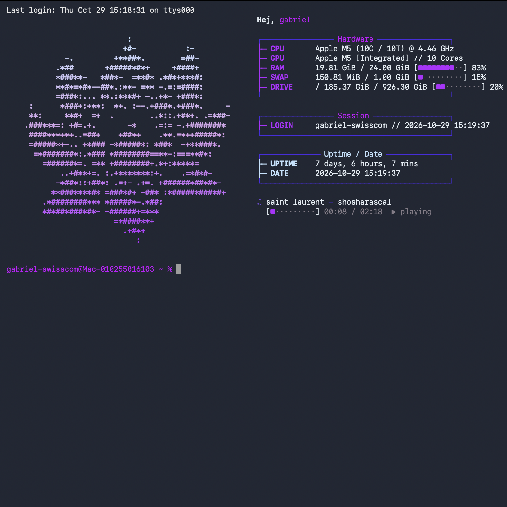

Home Server
Der Homeserver vereint einen eigenen Minecraft-Server, eine eingebaute Film- und Serienmediathek, Cloud-Speicher und einen Adblocker. Dazu gibt’s gemeinsame Familienkalender, Filmvorschläge, Serien-Downloads und ein personalisiertes Home-Management-Setup.
RSVM
Ich begann, Reddit Stories als Podcasts aufzunehmen – und erreichte damit 80'000 Plays pro Monat. Um die Folgen einfacher zu produzieren, entwickelte ich eine App: Sie erstellt per Knopfdruck Text über Bild, fasst Stories zusammen und hilft bei der Bearbeitung.